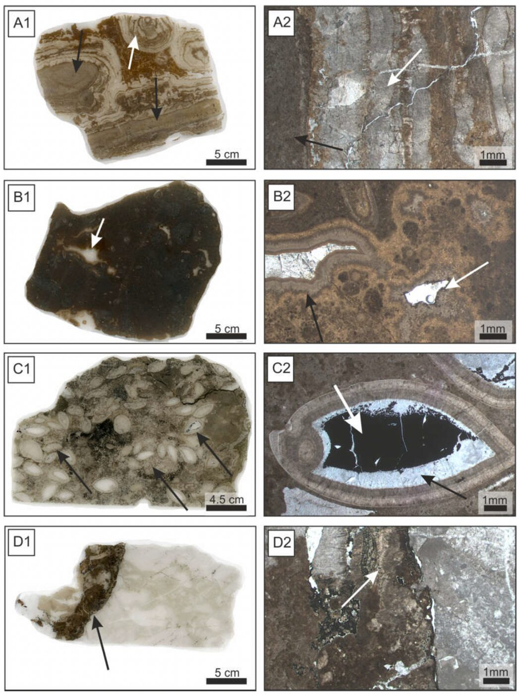
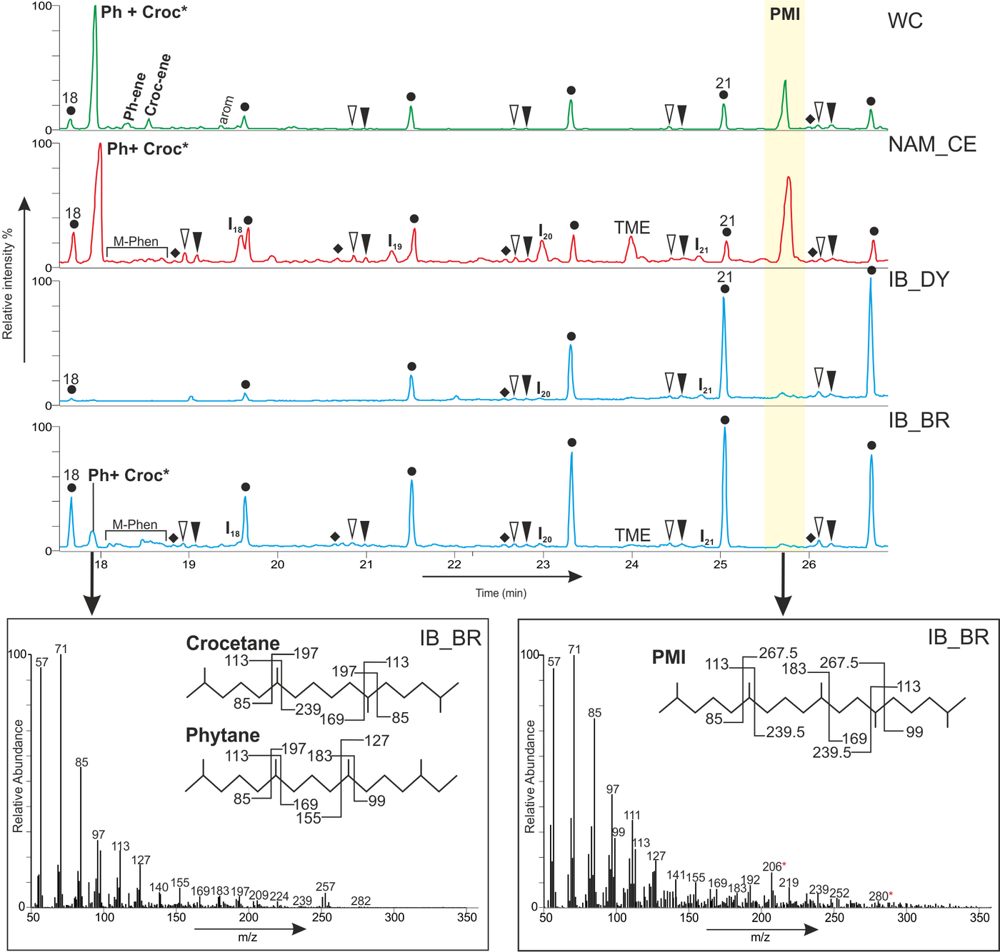

Archaeal Lipids in Fossil Methane Seeps
Bachelor thesis on biomarker preservation across 300 million years, University of Göttingen (2017)
Overview
At methane seeps, consortia of archaea and bacteria consume methane and leave behind carbonates and very 13C depleted lipids. I studied how well these archaeal biomarkers survive in fossil seep carbonates of increasing age and thermal maturity.
Geological setting
Three seep deposits were compared, the Late Eocene Whiskey Creek in the USA (34 to 41 million years), the Late Pennsylvanian Dwyka in Namibia (299 to 307 million years) and the Visean Iberg deposit in Germany (331 to 347 million years), one of the oldest methane seeps reported.
Methods
Lipids were extracted with organic solvents and analysed by GC-MS (Thermo TRACE 1310 with Quantum XLS Ultra MS, ZB-5MS column, 70 eV, m/z 50 to 600) and by GC-combustion-IRMS. Thermal maturity was assessed with CPI and OEP indices and hopane and sterane parameters such as Ts/C30, C29 20S/(20S+20R), C31 22S/(22S+22R) and MPI-1.
Key results
- Whiskey Creek is thermally immature, while Dwyka and Iberg fall within the oil window.
- Whiskey Creek and Dwyka contain abundant PMI and crocetane with δ13C values of −109‰ to −123‰, the hallmark of archaea performing anaerobic oxidation of methane.
- In Iberg only traces of PMI and TME remained, with δ13C values around −30‰ to −32‰, still suggesting a methane derived contribution to archaeal biomass.
Impact
The study showed that thermal maturity limits the preservation of archaeal lipids and provided biomarker evidence for archaea at the Iberg seep, which at the time extended the lipid record of seep archaea by roughly 30 million years.
Figures

